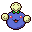
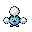
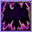
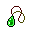
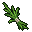

Pokédex / #189

Jumpluff #189
GrassFlying
Drifts on seasonal winds and spreads its cotton-like spores all over the world to make more offspring.
Generation 2 · Johto

Stats
| Attack | 55 | |
|---|---|---|
| Defense | 70 | |
| Sp. Atk | 55 | |
| Sp. Def | 95 |
In the wild
| Wild level | 85–95 |
|---|---|
| HP | 75 |
| Experience | 15 |
| Egg groups | Fairy, Grass |
Evolution
- Evolves from Skiploom at level 50.
Moves
| Level | Move | Type | Category | Power | Energy | Cooldown | Effect | |
|---|---|---|---|---|---|---|---|---|
| 1 | Tackle | Normal | Physical | 15 | 15 | 1s | Tackle is one of the most common and basic moves a Pokemon learns. It deals damage with no additional effects. | |
| 5 | Leech Seed | Grass | Status | 5 | 65 | 20s | Leech Seed plants a seed on the target. At the end of each turn that the target is under the effect of Leech Seed, the target's HP will be drained, and the same amount of HP will be restored to the target's opponent. Leech Seed will not work against Grass-type Pokemon. | |
| 10 | Bullet Seed | Grass | Physical | 25 | 85 | 17s | Bullet Seed does damage, hitting 2-5 times per use. | |
| 15 | Mega Drain | Grass | Special | 40 | 65 | 12s | Mega Drain inflicts damage, and 50% of the damage dealt to the target is restored to the user. The amount of HP recovered is always rounded down. | |
| 20 | Poison Powder | Poison | Status | – | 30 | 20s | Poison Powder poisons the target. | |
| 25 | Sleep Powder | Normal | Status | – | 85 | 100s | Sleep Powder puts the target to sleep. | |
| 30 | Synthesis | Grass | Status | – | 150 | 120s | Synthesis restores the user's current HP based on the weather conditions. Under normal conditions Synthesis will restore ½ of the user's total HP. | |
| 40 | Giga Drain | Grass | Special | 75 | 95 | 12s | Giga Drain deals damage and the user will recover 50% of the HP drained. | |
| 45 | Stun Spore | Normal | Status | – | 55 | 10s | Stun Spore paralyzes the target. | |
| 50 | Seed Bomb | Grass | Physical | 80 | 85 | 12s | The user slams a barrage of hard-shelled seeds down on the target from above. | |
| 55 |  | Acrobatics | Flying | Physical | 55 | 55 | 13s | Acrobatics deals damage and has no secondary effect. |
| 60 | Aerial Ace | Flying | Physical | 60 | 60 | 14s | Aerial Ace deals damage and ignores changes to the Accuracy and Evasion stats. | |
| 65 | Bounce | Flying | Physical | 85 | 95 | 18s | Bounce deals damage and has no secondary effect. | |
| 70 | Cotton Guard | Grass | Status | – | 150 | 120s | Cotton Guard raises the user's Defense stat by three stages. |
Field abilities
FlashHeadbutt
Special abilities
ChlorophyllLeaf Guard
Egg moves
AmnesiaAromatherapyConfusionCotton GuardDouble-EdgeEncoreEndureGrassy TerrainHelping HandSeed BombWorry Seed
Technical machines
Aerial AceBideDefense CurlDouble EdgeDouble TeamEnergy BallGiga DrainHeadbuttHyper BeamJumpluffMimicRageReflectRestSolar BeamSubstituteSwords DanceToxic
Drops
| Item | Amount | Chance | |
|---|---|---|---|
| seed | 1–10 | 95.2% | |
| bamboo leaves | 1–3 | 66.7% | |
| frostbite herb | 1–3 | 66.7% | |
 | leaf pendant | 1 | 66.7% |
| leaf | 1 | 37% | |
| cure herb | 1 | 33.3% | |
 | bunch of ripe rice | 1 | 26.7% |
| gracidea | 1 | 24.7% | |
| revival herb | 1 | 24.7% | |
| onigiri | 1–5 | 5% | |
| jumpluff doll | 1 | 0.1% | |
| Meadow Plate | 1 | 0.05% | |
| Sky Plate | 1 | 0.05% | |
| TM 20 | 1 | 0.01% | |
| TM 56 | 1 | 0.01% | |
| held miracle seed | 1 | 0.01% | |
| held sharp beak | 1 | 0.01% |